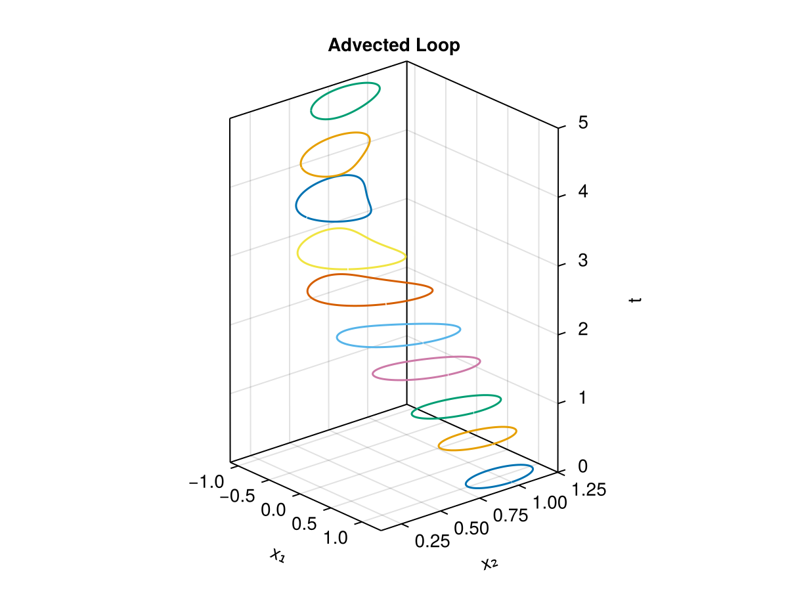
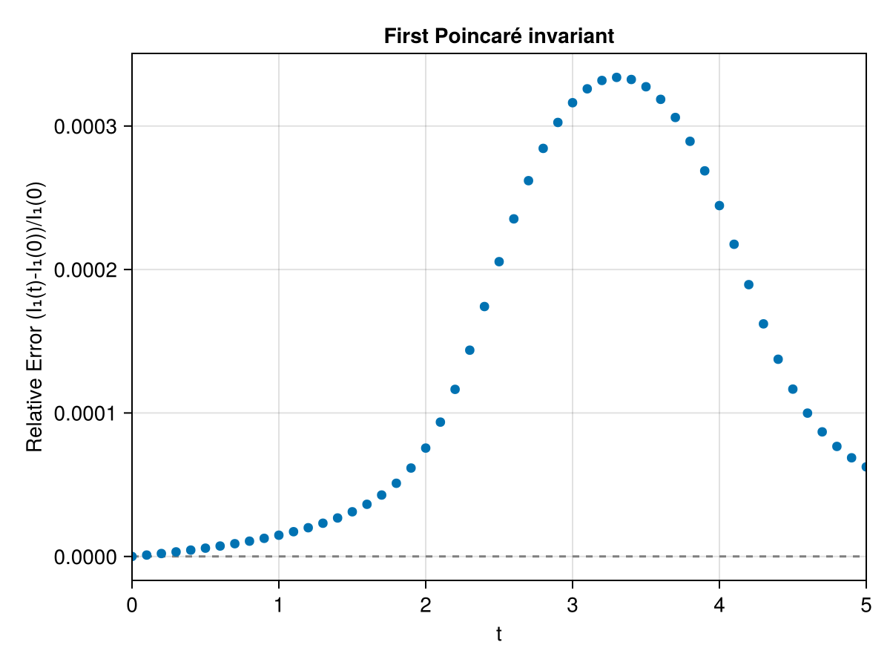
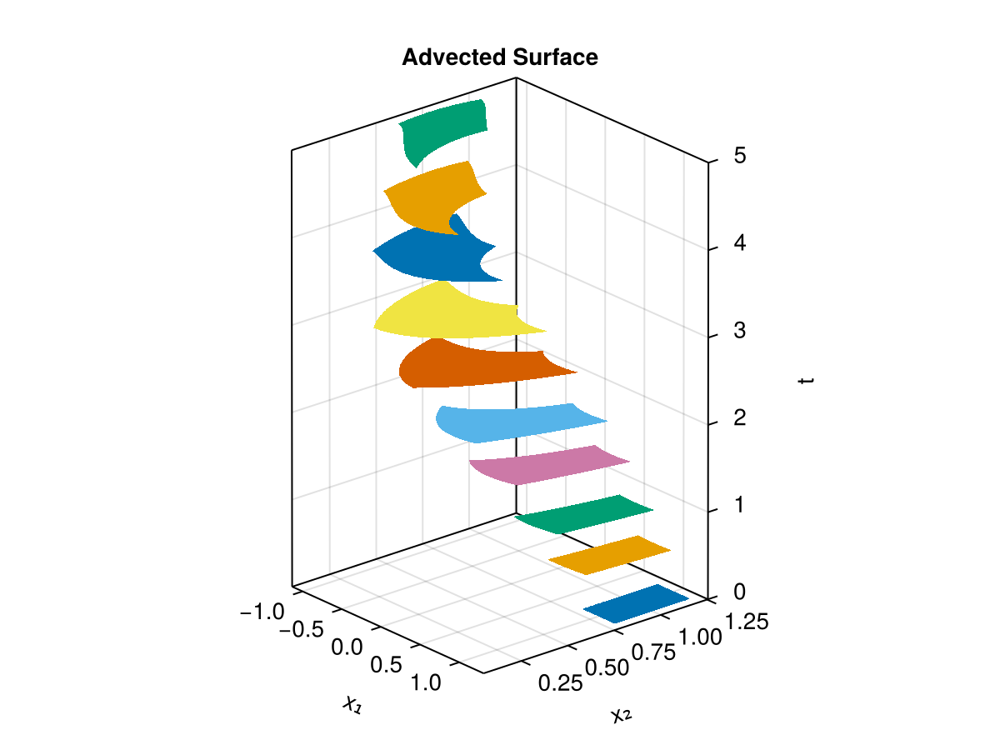
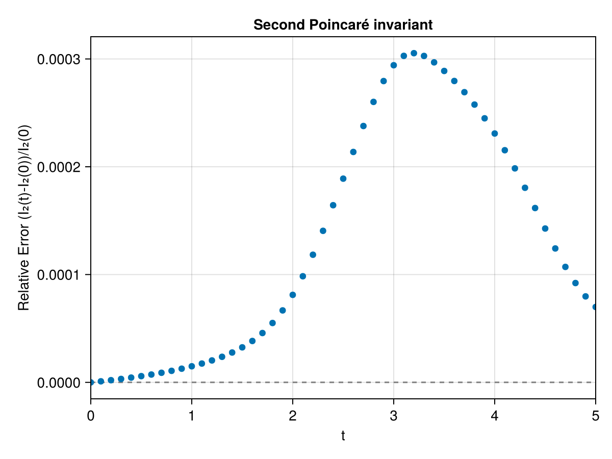

Massless Charged Particle
The massless charged particle in the plane is a noncanonical symplectic system. Its phase space is just the position $x = (x_1, x_2)$, and its dynamics derive from the degenerate Lagrangian
\[L(x, \dot{x}) = A(x) \cdot \dot{x} - \phi(x) ,\]
with magnetic vector potential $A$, electrostatic potential $\phi$ and magnetic field $B(x) = \nabla \times A(x)$. The Hamiltonian form of the equations of motion,
\[\dot{x} = \frac{1}{B(x)} \begin{pmatrix} 0 & -1 \\ +1 & 0 \end{pmatrix} \nabla \phi(x) ,\]
carries a state-dependent (noncanonical) symplectic structure. We use the problem and its exported forms from GeometricProblems.jl, integrating the degenerate IODEProblem with a Degenerate Variational Runge-Kutta method, DVRK, which preserves the noncanonical structure. The plotting functions plot_loop, plot_surface and plot_invariant come from the package's Makie extension, activated by loading CairoMakie.
using PoincareInvariants
using GeometricIntegrators
import GeometricProblems.MasslessChargedParticle as MCP
using StaticArrays
using CairoMakie
par = MCP.default_parameters()
prob = MCP.iodeproblem([1.0, 1.0]; timespan = (0.0, 5.0), timestep = 0.1)The invariant forms
The first invariant uses the one-form $\vartheta = A(x)$ (the magnetic vector potential), and the second uses the two-form $\omega = d\vartheta$, which for this system is
\[\omega = \begin{pmatrix} 0 & B(x) \\ -B(x) & 0 \end{pmatrix} .\]
Both are provided directly by the problem module (ϑ and B), so we only reshape them into the form(z, t, p) interface expected by PoincareInvariants. The parameter slot p carries the physical parameters par.
oneform(z, t, p) = SVector{2}(MCP.ϑ(t, z, p))
function twoform(z, t, p)
b = MCP.B(z, p)
@SMatrix [0.0 b;
-b 0.0]
endFirst invariant
\[I_{1} = \oint_{\gamma} A(x) \cdot dx\]
We advect a small circle of radius $\rho = 0.2$ around the initial position $(1, 1)$ and pass the parameters par to compute! (via plot_invariant) so the form can evaluate $A$.
q₀ = SVector(1.0, 1.0)
ρ = 0.2
pi1 = FirstPI{Float64, 2}(oneform, 500)
sol1 = integrate(PIEnsembleProblem(prob, pi1, ϕ -> q₀ .+ ρ .* (cospi(2ϕ), sinpi(2ϕ))), DVRK(Gauss(2)))The loop is transported and deformed by the flow:
plot_loop(sol1; xlabel = "x₁", ylabel = "x₂")
plot_invariant(pi1, sol1; p = par, title = "First Poincaré invariant")
Second invariant
\[I_{2} = \int_{S} \omega = \int_{S} B(x) \, dx_1 \, dx_2\]
is the magnetic flux through the surface $S$. We advect a small square around $(1, 1)$.
pi2 = SecondPI{Float64, 2}(twoform, 2_000)
sol2 = integrate(PIEnsembleProblem(prob, pi2, (x, y) -> q₀ .+ ρ .* (2x - 1, 2y - 1)), DVRK(Gauss(2)))grid = SecondPI{Float64, 2}(twoform, (15, 15), SecondFinDiffPlan)
solg = integrate(PIEnsembleProblem(prob, grid, (x, y) -> q₀ .+ ρ .* (2x - 1, 2y - 1)), DVRK(Gauss(2)))
plot_surface(grid, solg; xlabel = "x₁", ylabel = "x₂")
plot_invariant(pi2, sol2; p = par, title = "Second Poincaré invariant")
The DVRK(Gauss(2)) method is a fourth-order variational integrator for noncanonical symplectic systems, so both invariants are conserved with high accuracy as the curve and surface are advected by the flow. A standard, structure-agnostic integrator would let them drift.